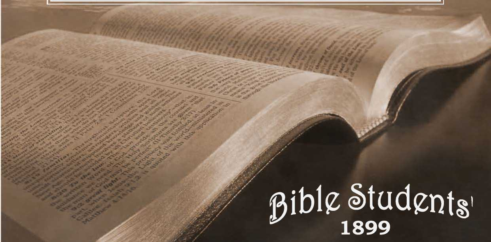
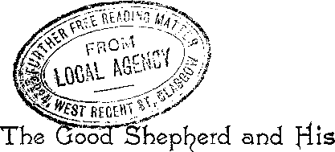

No. 46—The Good Shepherd and His Two Flocks
OLD TLEOLOGJ ^UARTBRLjf No. 46.—JUL Y, i8gg.
ENTERED AT THE POST OFFICE, ALLEGHENY, PA.
SAMPLE TRACTS FREE ! SUBSCRIPTION PRICE, SIX CENTS PER YEAR—48 PAGES.
“ I am the good Shepherd : the good Shepherd giveth his life for the sheep . . . And other sheep I have, which are not of this fold: them also I must bring, and they shall hear my voice; and there shall be one fold and one Shepherd.”—John io: II, 16.
H E illustration of the Lord as a Shepherd, and his peo-* pie as sheep, is common to the Scriptures, and very fitly represents their close confidential relationship, but it is a figure that is quite contrary to the spirit of the world. The “natural man ” sees little in the figure to admire, and when he expresses his sentiments he would rather represent himself to others and have them regard him as a wolf, a lion, a tiger, or some other ferocious creature, which they would best not stir up, lest he devour them. We find this char-adteristic well borne out in the emblems of heraldry; the escutcheons of the great are emblazoned with figures representing beasts of prey, birds of prey, and nondescripts, blending various natures—but all of them ferocious, snarling, howling, screeching, or otherwise implying fierceness and intimidation of foes. But when God would represent the emblems of his royal family, his Only Begotten Son is called the Lamb of God, and all his people are styled his % sheep,—symbols of meekness, gentleness, harmlessnesS. “ Jehovah is my Shepherd ” is properly represented as their sentiment.-—Psa. 23.
Sheep-raising in Palestine, and more or less throughout that vicinity, was carried on quite extensively, and yet very differently from present methods of Europe and America. The owner of the flock or his son usually did the shepherding, or sometimes an employee who was given an interest in the increase of the flock—as, for instance, Jacob, with his father-in-law Laban. Under the circumstances it is not surprising that the relationship between the sheep and their shepherds was very different from now—much more confidential. The shepherd was acquainted with his sheep and loved them, not merely as so much wealth and merchandise, but as friends, companions, with whom he conversed, and whose welfare he defended. Travelers tell us that the peculiarities of this parable are fully illustrated in eastern countries, even to this day; that a shepherd will know every individual sheep in his flock, and have a name for it, and that the sheep know their shepherd, and discern readily the sound of his voice, and cannot be deceived. Some tell us how they have experimented and proved these peculiar statements of the parable : one asked the shepherd to call some particular sheep by name, to see whether or not it would come to him ; the shepherd called one that was far off, and it immediately lifted its head, looked toward him, and when the call was repeated started, and wending its way, in and out through the flock, came to his feet, where he patted its head in reward for its obedience. Thinking this possibly a solitary instance, requests were made for repetitions of the test, with similar results. Another traveler imitated the shepherd’s voice, and called the sheep, but they paid no attention. Thinking that it was because Jie ha<J not on the shepherd’s garments, to test the matter,
he and the shepherd changed raiment, but still the sheep would not heed the voice of the stranger; but when the shepherd spoke to them, even though clothed in the gar-। ments of the stranger, they knew his voice and at once responded.
Our Lord used these fadts, well known to his hearers, to illustrate his relationship to the Lord’s people, as their Shepherd, the Son of the Great Shepherd; and he pointed out that all who were truly of his flock would hear his voice, would not be deceived by the Adversary, though he should disguise himself in garments of light, to deceive, if it were possible, the very eledt. The important thing, then, is that we should become true members of the Lord’s flock, intimately acquainted with him, and familiar with his word, his voice—disciples indeed. He is seeking no others than these for his present flock. Nor has he at the present time two flocks, one of them hearing and obeying his voice, and the other heedless of his words. He declares, “My sheep hearmyvoice; I know them, and they follow me.” Those who are not following the Lord, in obedience to his voice, expressed in word and example, are not of his flock; they are not being led to the green pastures and still waters of present truth; their table is not furnished in the presence of their foes, nor are they in the way marked out by the divine goodness and mercy, to dwell in the house of the Lord forever.—Psa. 23.
Jehovah God established a typical Kingdom or sheepfold, and accepted the nation of Israel as his sheep, but as a nation they were wayward sheep and knew him not. Nevertheless, with a Law Covenant he fenced them in. They desired a king, a ruler, a caretaker, a governor, and God let them have their wish; but none of these was the true shepherd, neither did any bring the sheep into desirable conditions. And when these were finally elope away.
various others presented themselves as the Messiah, falsely claiming the right to lead Israel—false Messiahs. These, as our Lord declares, were thieves and robbers, who sought the control of the sheep, not from interest in the sheep, but from selfish motives, for self-aggrandizement and exaltation. These attempted to lead out the Lord’s people, not by the door, but by climbing up other ways: by climbing over the Law, or by digging under it, they would reach the sheep and become leaders; and altogether in various ways a large proportion of Israel had been led astray out of the fold, some to idolatry, and some simply to wander in the wilderness.
At our Lord’s first advent this was the condition of things: God’s covenant with Israel was standing as a wall around that nation, but its door was barred by Justice, as represented in the Mosaic Law—Israel’s Covenant. There could be no proper ingress or egress; all were prisoners of the Law, shut up unto that hope which should afterward be revealed, namely, Christ the Door or ‘‘Way” of life. Meanwhile, though the door was guarded zealously by the Scribes and Pharisees, the fadt was entirely negledted that thieves and robbers, Satan’s servants, were at work plundering the sheepfold.—John 10:1, 2, 7, 9; Gal. 3:24; John 14:6; Zech. 9.-9-12.
Nor could our Lord Jesus rightfully open the fold and take charge of the sheep, except at the cost of his own life. This was the purpose of the Father, the Great Shepherd, and with this in view he shut up the sheep under the Law, to the intent that they would need to be redeemed by Ins Son (the appointed Shepherd), from under the dominion of the Law, before they could be made free with the liberty wherewith Christ makes free his people. And this was the first work that the Good Shepherd did for the sheep; the laying down of his life began at the beginning of his min» istry, when he made a full consecration of himself even unto death, and symbolized this in baptism. It was in view of this sacrifice which he had already devoted, and was even then offering, and which was subsequently finished at Calvary, that our Redeemer announced himself as the Good Shepherd who giveth his life for the sheep.
The Apostle declares that our Lord’s death redeemed Israel from under the curse (sentence) of the Law—but it not only satisfied the Law, “the porter,” so that he opened the sheepfold, but it gave to the true Shepherd the ownership and control of the sheep, that he might lead them out to green pastures, and that they might go out and in with perfedt freedom, as his sheep, following him. Our Lord testified, however, that many true sheep had gotten out of the fold, and were lost in the wilderness of sin. His ministry was a call to these as well as to those who remained in the fold,—to the publicans and sinners as well as to those who were endeavoring to live near to God.
Thus the true Shepherd showed his interest in all his true sheep, including the lame, the weak, the starved. He called sinners to repentance, and the true sheep, realizing their shortcomings under the Law, responded and came to him as the Shepherd and Bishop of their souls. But inasmuch as many of the flock had wandered far from the position of true sheep, so that there were not enough who heard his voice, to complete the eledt number of his flock, this Good Shepherd has, during this Gospel age, lifted up his voice (speaking through the members of his flock, “his Budy”), and has called sheep from amongst the Gentiles; and a sufficient number to complete the original predestination will eventually respond.
The call of this present time is not a general one, but, as this Scripture declares, “lie calleth his own sheep by name,”—it is therefore a special call. “The Lord knoweth them that are his.” They manifest relationship to him as his flock by their obedience to his call—by following him. They hear his voice through his Word, the Bible, and it alone will they obey. Nor is it the mere phraseology of Scripture that the true “sheep” note : they know the tone of the Shepherd’s voice, the ring of the truth—the spirit of the truth—justice and love. Hence they cannot be deceived though the Adversary quote Scripture. They have received not the spirit of fear but the spirit of love, the spirit of their Shepherd.
The flock which is now being called, and which eventually will make its calling and election sure, the Scriptures inform us will be only “a little flock,” and the fold provided for these is a special one; viz., the Kingdom. (Luke 12:32.) Throughout this Gospel age the Lord has been caring for this class; he has specially led and fed and blessed them, notwithstanding that to the appearance of others they have passed through severe trials, disciplines, sufferings. Yea, as our Shepherd himself declared, whosoever lives godly suffers persecution. But we are to remember that this is a peculiar trial time, for selecting apeculiar and eledl flock. We are to remember, also, the Shepherd’s declaration that he has other sheep which are not of this fold—not provided for in the calling to the Kingdom. These other sheep are still astray in the wilderness of sin, but the Millennial day is near at hand, in which the Lord will gather all his scattered sheep, all who would seek and love righteousness and harmony with God under favorable conditions,—that they may all be brought into accord with him and be his flock. The Good Shepherd gave his life a ransom for all his sheep— not merely for the “little flock ” of this age, the “heirs of the Kingdom. ” Christ’s larger flock will be gathered after the Kingdom is set up. (Matt. 25 -.31, 32.) “Other sheep Ihave that are not of this fold [not of the “little flock” now being called and gathered during this Gospel age to the Kingdom fold] : them also I must bring [to the Father’s fold] and there shall be one fold and one Shepherd.”
A part of the key to this parable, as it is also the key to many other features of the divine plan, is found in the fact that the sheep of the “little flock,” now being called and selected to joint-heirship in the Kingdom, are to be sacrificed. As the Shepherd, the King’s Son, himself was sacrificed as the Lamb of God (and not only opened the door to those who are shut up under the Law, but by the same sacrifice also redeemed the whole world of mankind, amongst which are the “other sheep” that he is yet to seek) so the sheep of the “little flock,” now being called, are all to suffer with Christ—with the Lamb of God,—are all to be “living sacrifices, holy, acceptable to God, and their reasonable service.” (Rom. 12:1.) As the Apostle elsewhere declares, “Hereby we know love, because he laid down his life on our behalf: and we ought also to lay down our lives for the brethren,” for the fellow-sheep.—1 John 3:16, Di agio tt.
From this standpoint it will be seen that, as our Lord was the Father’s Lamb, and the sin-offering for the world, so we who are of Jesus’ flock are to fill up that which is behind of the afflictions of Christ, in the interest of his Body, which is the Church, (Eph. 1:22.) And other Scriptures show us that all of the flock thus faithful, in following the Shepherd even “unto death," are counted as members of the Body of the Shepherd. Thus the entire Gospel age has been the period of suffering with Christ, of dying daily, of laying down our lives for the brethren ; and not until this sacrifice is complete in the close of this age will the New Covenant be thrown open in the largest sense of the word to the world of mankind in general, and the great Shepherd be complete—Head and body. Then
the spirit and the Bride will say, Come, and whosoevef will may come,—whereas now, “No man can come except the Father draw him,’’ and in all a “ little flock.”—John 6.-44; Rev. 22:17.
The spirit of the great Chief (or Head) Shepherd of the flock is to be in all those now being called to association with him in the Kingdom. As the Good Shepherd lays down his life for the flock, so all of these will lay down their lives in the service of the truth. As the Good Shepherd was not indifferent to the necessities of the sheep, not caring simply for himself, and how much he could get out of the sheep, so it will be with those who have his spirit— their service of the Body of Christ will not be for filthy lucre’s sake, nor for honor among men, nor for earthly gain, in any sense of the word; but for the love of God, the love of the truth, the love of the flock.
The great Good Shepherd of the everlasting future who will care for all who will become his true sheep and follow his call will be the Heavenly Father, and associated with him in the care of his flock will be his sons:-—Christ the Only Begotten and his “brethren,” now the “little flock.” ■—Heb. 2:10; Jas. 1:18; Rev. 14:40.
Lift up your beads, desponding pilgrims;
Give to the winds your needless fears;
He who hath died on Calvary’s mountain, Soon is to reign a thousand years.
■ “ A thousand years ! earth’s coming glory!
’Tis the glad day so long foretold;
’Tis the bright morn of Zion’s glory, Prophets foresaw in times of old.”
WATCH TOWER BIBLE AND TRACT SOCIETY BIBLE HOUSE, ALLEGHENY, PA., U. S. A.
Samples of our tracts for the dissemination of Christian knowledge sent free to applicants. , - -- svwiTVfflV
u 1 , ,’,1- , , 1 • ‘ij'.i-ll-G
■ r> r~ i "V i 0 L4 OC P'*’, H, ■ p 1 G i ’ c ri i- - >